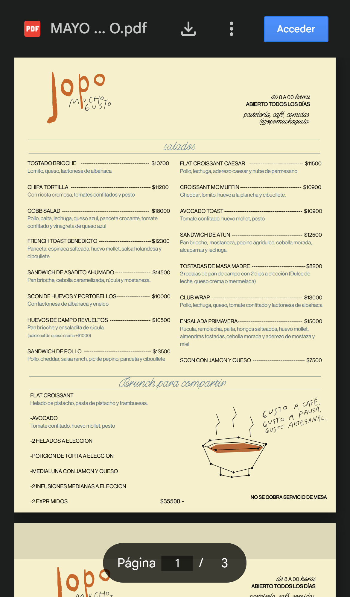

No hay web propia: todo pasa por Linktree y un PDF. Quien busca "Jopo" en Google no encuentra un lugar propio con menú, horarios y cómo pedir.
11,6K seguidores, bio clara (qué ofrecen, horario, "sin reserva") y destacadas de promos y heladería.
No pudimos ver el puntaje ni las reseñas desde afuera. Muy bien que el Linktree pida reseñas.
El menú es un PDF de Drive a dos columnas: en el celular hay que hacer zoom, y el archivo se llama "MAYO". Para pedir, Rappi o escribir por WhatsApp.

Captura del 13/10/2026, simulando un iPhone. El nombre del archivo y el botón "Acceder" de Google aparecen antes que el menú.
Si los precios cambiaron desde mayo, subí la versión nueva. Y renombrá el archivo para que no diga un mes viejo: es lo primero que ve el cliente.
El menú de mediodía cambia todos los días y hoy solo se ve si justo mirás la story. Creá una destacada "Hoy" y sumá un botón en el Linktree que lleve ahí.
En una sola imagen: delivery (Rappi), para retirar (WhatsApp), horario y dirección. Fijalo primero en el perfil, así nadie tiene que preguntar.
Una web simple con el menú siempre actualizado y pensado para el celular, y pedidos para retirar o delivery propio sin pasar por la comisión de una app. Así, quien encuentra a Jopo en Google o Instagram llega a pedir en dos toques.
15 minutos, sin cargo y sin compromiso. Te mostramos cómo se vería.
WhatsApp +54 9 11 5751-7796 · kumesomos@gmail.com · @kume.agenciamkt
Ignacio & Delfi
KÜME